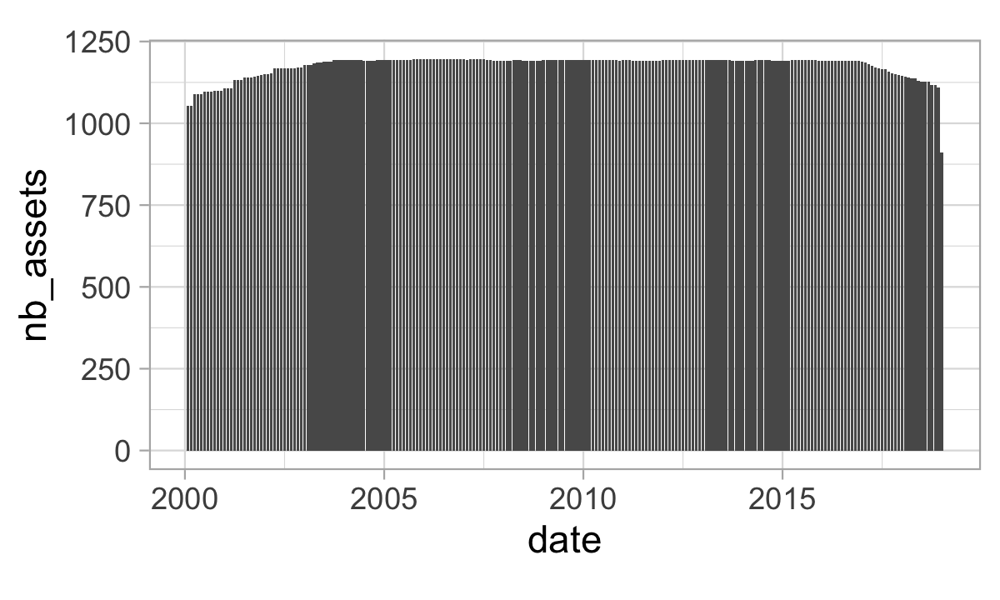
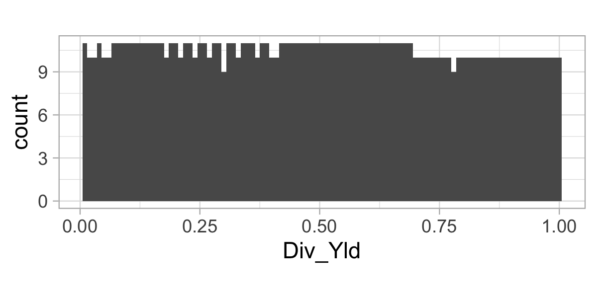

1 记号与数据
1.1 符号
本节旨在提供全书将使用的正式数学约定。
粗体符号表示向量和矩阵。我们使用大写字母表示矩阵，使用小写字母表示向量。 \(\mathbf{v}'\)和\(\mathbf{M}'\)表示\(\mathbf{v}\)和\(\mathbf{M}\)的转置。 \(\mathbf{M}=[m]_{i,j}\)，其中 \(i\) 是行索引，\(j\) 是列索引。
我们将并行使用两种符号。第一个是纯机器学习表示法，其中 标签（也称为 输出、因变量 变量或 被预测 变量）\(\mathbf{y}=y_i\) 通过特征 \(\mathbf{X}_i=(x_{i,1},\dots,x_{i,K})\) 的函数进行近似。特征矩阵\(\mathbf{X}\)的维度为\(I\times K\)：有\(I\) 实例、记录或观测，并且每一个都有\(K\) 属性、特征、输入或预测器将用作独立和解释性变量（所有这些术语将互换使用）。有时，为了简化符号，我们会为 \(\textbf{X}\) 的一个实例（一行）编写 \(\textbf{x}_i\)，或为 \(\textbf{X}\) 的一个（特征）列向量编写 \(\textbf{x}_k\)。
第二种符号类型与金融有关，并且与第一种符号类型直接相关。我们经常使用根据价格数据计算得出的离散收益率 \(r_{t,n}=p_{t,n}/p_{t-1,n}-1\)。这里\(t\)是时间指标，\(n\)是资产指标。除非另有说明，收益率总是在一个时期内计算，尽管这个时期有时可以是一个月或一年。为避免混淆，我们会在需要时另行说明收益率记号。
按照我们之前的约定，收益率观测日期数将为 \(T\)，资产数量为 \(N\)。资产的特征或属性将用\(x_{t,n}^{(k)}\)表示：它是公司或资产\(n\)的\(k^{th}\)属性的时间\(t\)值。在堆叠表示法中，\(\mathbf{x}_{t,n}\) 将代表资产 \(n\) 在时间 \(t\) 的特征向量。此外，\(\mathbf{r}_t\)代表\(t\)时刻所有资产的收益率，而\(\mathbf{r}_n\)代表资产\(n\)的所有时期收益率。通常，收益率将扮演因变量或标签（在机器学习术语中）的角色。对于无风险资产，我们将使用符号 \(r_{t,f}\)。
两种符号之间的联系大多数时候如下。一个 实例（或 观测）\(i\) 将由一对（\(t,n\)）一个特定日期和一个特定公司组成（如果数据是完美的矩形且没有缺失字段，则为 \(I=T\times N\)）。标签通常是在未来某个时期计算出的公司绩效衡量指标，而特征将由 \(t\) 时刻的公司属性组成。因此，因子投资中机器学习引擎的目的是确定将公司的时间 \(t\) 特征映射到其未来绩效的模型。
就规范矩阵而言：\(\mathbf{I}_N\) 将表示 \((N\times N)\) 单位矩阵。
根据概率文献，我们采用期望算子 \(\mathbb{E}[\cdot]\) 和条件期望 \(\mathbb{E}_t[\cdot]\)，其中相应的过滤 \(\mathcal{F}_t\) 对应于时间 \(t\) 时可用的所有信息。更准确地说，\(\mathbb{E}_t[\cdot]=\mathbb{E}[\cdot | \mathcal{F}_t]\)。 \(\mathbb{V}[\cdot]\) 将表示方差运算符。根据上下文，概率将简单地写为 \(P\)，但有时我们会使用更重的符号 \(\mathbb{P}\)。概率密度函数（pdfs）将用小写字母（\(f\)）表示，累积分布函数（cdfs）将用大写字母（\(F\)）表示。我们将分布相等写为\(X \overset{d}{=}Y\)，在变量的支持下，这相当于所有\(z\)的\(F_X(z)=F_Y(z)\)。对于随机过程 \(X_t\)，如果 \(X_t\) 的规律随时间恒定，即 \(X_t\overset{d}{=}X_s\)，则称其为 平稳，其中 \(\overset{d}{=}\) 表示分布相等。
有时，渐近行为将用通常的朗道符号 \(o(\cdot)\) 和 \(O(\cdot)\) 来表征。符号\(\propto\)表示比例：\(x\propto y\)表示\(x\)与\(y\)成比例。对于导数，我们在对 \(x\) 求导时使用标准符号 \(\frac{\partial}{\partial x}\)。当计算所有导数（梯度向量）时，我们采用紧凑符号 \(\nabla\)。
在方程中，左侧和右侧可以写得更紧凑：l.h.s。和 r.h.s.，分别。
最后，我们转向函数。我们列出以下几个：
- \(1_{\{x \}}\)：条件\(x\)的指示函数，如果\(x\)为真则等于1，否则为零。
- \(\phi(\cdot)\)和\(\Phi(\cdot)\)是标准高斯pdf和cdf.
-card\((\cdot)=\#(\cdot)\) 是基数函数的两种表示法，它计算给定集合中的元素数量（作为函数的参数提供）。
- \(\lfloor \cdot \rfloor\) 是整数部分函数。
- 对于实数\(x\)，\([x]^+\)是\(x\)的正数部分，即\(\max(0,x)\).
- tanh\((\cdot)\) 是双曲正切：tanh\((x)=\frac{e^x-e^{-x}}{e^x+e^{-x}}\).
- ReLu\((\cdot)\) 是整流线性单元：ReLu\((x)=\max(0,x)\).
- s\((\cdot)\) 将是 softmax 函数：\(s(\textbf{x})_i=\frac{e^{x_i}}{\sum_{j=1}^Je^{x_j}}\)，其中下标 \(i\) 指的是向量的 \(i^{th}\) 元素。
1.2 数据集
在整本书中，为了 再现性 ，我们将通过基于 https://github.com/shokru/mlfactor.github.io/tree/master/material 上提供的单个金融数据集的实施示例来说明我们提出的概念。该数据集包含 1,207 只在美国上市的股票（可能来自加拿大或墨西哥）的信息。时间窗口从 1998 年 11 月开始，到 2019 年 3 月结束。对于每个时间点，93 个 特征 描述了样本中的公司。这些属性涵盖了广泛的主题：
- 估值（收益率、会计比率）；
- 盈利能力和质量（股本收益率）；
- 动量和技术分析（过去收益率、相对强弱指标）；
- 风险（波动率）；
- 估计（每股收益）；
- 成交量和流动性（股票成交量）。
样本并不是完美的矩形：没有缺失点，但公司数量及其属性随时间变化并不恒定。这使得回测中的计算更加棘手，但也更加现实。
library(tidyverse) # Activate the data science package
library(lubridate) # Activate the date management package
load("data_ml.RData") # Load the data
data_ml <- data_ml %>%
filter(date > "1999-12-31", # Keep the date with sufficient data points
date < "2019-01-01") %>%
arrange(stock_id, date) # Order the data
data_ml[1:6, 1:6] # Sample values## # A tibble: 6 × 6
## stock_id date Advt_12M_Usd Advt_3M_Usd Advt_6M_Usd Asset_Turnover
## <int> <date> <dbl> <dbl> <dbl> <dbl>
## 1 1 2000-01-31 0.41 0.39 0.42 0.19
## 2 1 2000-02-29 0.41 0.39 0.4 0.19
## 3 1 2000-03-31 0.4 0.37 0.37 0.2
## 4 1 2000-04-30 0.39 0.36 0.37 0.2
## 5 1 2000-05-31 0.4 0.42 0.4 0.2
## 6 1 2000-06-30 0.41 0.47 0.42 0.21该数据有 99 列和 268336 行。前两列表示股票标识符和日期。接下来的 93 列是特征（详细信息请参见附录中的表 17.1）。最后四列是标签。这些点按月频率采样。正如实践中的情况一样，资产的数量会随着时间而变化，如图1.1所示。
data_ml %>%
group_by(date) %>% # Group by date
summarize(nb_assets = stock_id %>% # Count nb assets
as.factor() %>% nlevels()) %>%
ggplot(aes(x = date, y = nb_assets)) + geom_col() + # Plot
theme_light() + coord_fixed(3)
图 1.1：随时间变化的资产数量。
数据集中有四个直接 标签：R1M_Usd、R3M_Usd、R6M_Usd 和 R12M_Usd，分别对应股票的 1 个月、3 个月、6 个月和 12 个月的未来/远期收益率。收益率为 总收益率，也就是说，它们包含了所考虑期间内潜在的 股息 支付。与仅价格收益率相比，这是投资收益的更好代表。我们参考Hartzmark and Solomon (2019)的分析来研究价格收益率与股息脱钩的影响。这些标签位于数据集的最后 4 列中。我们在下面提供了这些标签的描述性统计量。
## # A tibble: 4 × 5
## Label mean sd min max
## <chr> <dbl> <dbl> <dbl> <dbl>
## 1 R12M_Usd 0.137 0.738 -0.991 96.0
## 2 R1M_Usd 0.0127 0.176 -0.922 30.2
## 3 R3M_Usd 0.0369 0.328 -0.929 39.4
## 4 R6M_Usd 0.0723 0.527 -0.98 107.为了预测未来的模型，我们将预测变量的名称保留在内存中。此外，我们还保留了一个更短的预测变量列表。
features <- colnames(data_ml[3:95]) # Keep the feature's column names (hard-coded, beware!)
features_short <- c("Div_Yld", "Eps", "Mkt_Cap_12M_Usd", "Mom_11M_Usd",
"Ocf", "Pb", "Vol1Y_Usd")预测变量已经被均匀化，即对于任何给定的特征和时间点，分布是均匀的。鉴于 1,207 只股票，下图无法显示完美的矩形。
data_ml %>%
filter(date == "2000-02-29") %>%
ggplot(aes(x = Div_Yld)) + geom_histogram(bins = 100) +
theme_light() + coord_fixed(0.03)
图 1.2：2000 年 2 月 29 日股息收益率特征的分布。
原始标签（未来收益率）是数值型的，将用于回归练习，即当目标是预测标量实数时。有时，练习可能会有所不同，目的可能是预测类别（也称为类），例如“买入”“持有”或“卖出”。为了能够执行这种类型的分类分析，我们创建了额外的分类标签。
data_ml <- data_ml %>%
group_by(date) %>% # Group by date
mutate(R1M_Usd_C = R1M_Usd > median(R1M_Usd), # Create the categorical labels
R12M_Usd_C = R12M_Usd > median(R12M_Usd)) %>%
ungroup() %>%
mutate_if(is.logical, as.factor)新标签是二元的：如果原始收益率高于所考虑时间段内的中位数收益率，则它们等于 1（真），否则等于 0（假）。因此，在每个时间点，一半样本的标签等于 0，另一半的标签等于 1：一些股票表现优异，另一些股票表现不佳。
在机器学习中，模型根据一部分数据（训练集）进行估计，然后对另一部分数据（测试集）进行测试以评估其质量。我们相应地分割了样本。
separation_date <- as.Date("2014-01-15")
training_sample <- filter(data_ml, date < separation_date)
testing_sample <- filter(data_ml, date >= separation_date)我们还保留了一些关键变量，例如资产标识符列表和矩形版本的收益率。为简单起见，在后者的计算中，我们缩小了投资范围，仅保留我们拥有最多点数的股票。
stock_ids <- levels(as.factor(data_ml$stock_id)) # A list of all stock_ids
stock_days <- data_ml %>% # Compute the number of data points per stock
group_by(stock_id) %>% summarize(nb = n())
stock_ids_short <- stock_ids[which(stock_days$nb == max(stock_days$nb))] # Stocks with full data
returns <- data_ml %>% # Compute returns, in matrix format, in 3 steps:
filter(stock_id %in% stock_ids_short) %>% # 1. Filtering the data
dplyr::select(date, stock_id, R1M_Usd) %>% # 2. Keep returns along with dates & firm names
pivot_wider(names_from = "stock_id",
values_from = "R1M_Usd") # 3. Put in matrix shape